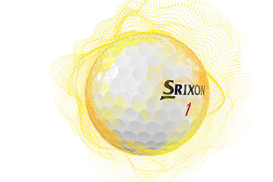

Z-STAR XV white
MAXIMUM DISTANCE
Z-STAR XV provides maximum ball speed for unmatched driver and iron distance. Its premium 4-piece construction gives skilled players complete tour performance, tee to green.
TECHNOLOGY

Fastlayer core
Starts soft in the center and gradually becomes firm around its edge, giving high-speed players exceptional feel and plenty of ball speed for maximum distance. A newly formulated inner core adds resiliency for even more ball speed.
Spin Skin with SeRM
A soft, thermoplastic urethane cover features Spin Skin with SeRM, a durable coating with flexible molecular bonds. It digs deep into wedge and iron grooves, maximizing spin for more control and more stopping power.

338 Speed Dimple Pattern
Less drag and more lift boosts overall distance and flies straight, even in the toughest wind conditions.
Srixon Z-Star xv Specs
| CONSTRUCTION | 4pc |
| COVER MATERIAL | Urethane |
| COVER THICKNESS | 0.5 mm |
| COMPRESSION | 102 |
| DIMPLES | 338 |
AVAILABLE COLORS
Pure White and Tour Yellow.
SRIXON Z-STAR XV PRICE
50 € / 55 CHF / 529 SEK / 39.99 £